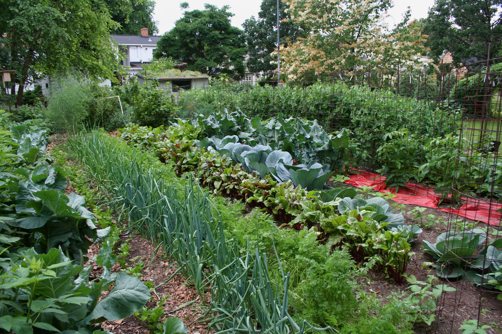

Welcome to the World of Kitchen Gardening
At J's Landscape and Design, we believe that a beautiful garden can transform any space into a peaceful retreat. Whether you're a seasoned gardener or just starting, we're here to help you create and maintain the garden of your dreams. Our passion for plants, dedication to sustainable practices, and commitment to customer satisfaction set us apart.
Why Choose Us?
Expert Knowledge: With years of experience in horticulture, our team of garden experts can offer personalized advice and solutions tailored to your specific needs. Sustainable Practices: We are committed to environmentally friendly gardening techniques that promote healthy, thriving plants without harming the ecosystem. Quality Plants and Products: We source only the best plants, seeds, and gardening supplies to ensure your garden flourishes year-round. Customer-Centric Approach: Your satisfaction is our top priority. We take the time to understand your vision and work closely with you to bring it to life.
What We Offer
From garden design and landscaping to plant care and maintenance, we offer a comprehensive range of services to meet all your gardening needs. Explore our services and discover how we can help you create a garden that reflects your style and enhances your outdoor living space.
Services We Offer
- Custom Garden Design: We work with you to design a garden that suits your space, lifestyle, and aesthetic preferences. From initial concepts to detailed plans, we ensure your garden is both beautiful and functional.
- Landscaping: Our landscaping services include everything from planting to hardscaping. We can install patios, pathways, water features, and more to enhance your garden's appeal.
- Seasonal Planting: We offer seasonal planting services to ensure your garden looks its best throughout the year. Whether it’s spring blooms or autumn foliage, we select plants that thrive in your local climate.
- Lawn Care: Our lawn care services include mowing, edging, fertilizing, and aeration to keep your lawn lush and green.
- Pruning and Trimming: Regular pruning and trimming are essential for plant health and aesthetics. We carefully prune your trees, shrubs, and hedges to encourage healthy growth and maintain their shape.
- Weed and Pest Control: We use eco-friendly methods to control weeds and pests, protecting your plants without harming the environment.
- Irrigation Solutions: We design, install, and maintain efficient irrigation systems that conserve water while keeping your garden hydrated.
- Garden Consultations: Not sure where to start? Schedule a consultation with one of our gardening experts. We’ll assess your garden and provide personalized advice and recommendations.
- Workshops and Classes: Learn the art of gardening with our hands-on workshops and classes. Topics include organic gardening, container gardening, and plant care basics.
Get in Touch
Ready to transform your garden? Contact us today to schedule a consultation or inquire about our services. We look forward to helping you create a garden that you’ll love for years to come.